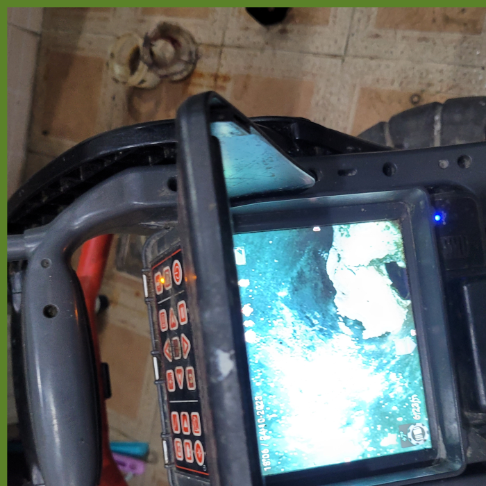
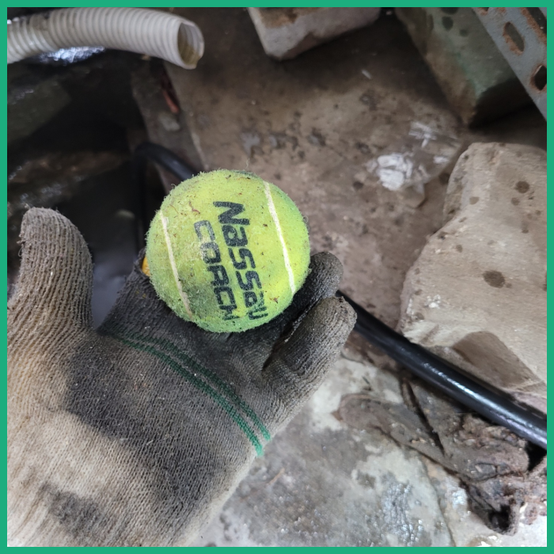
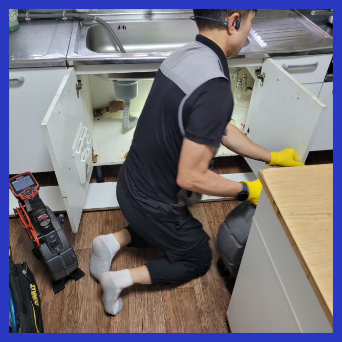
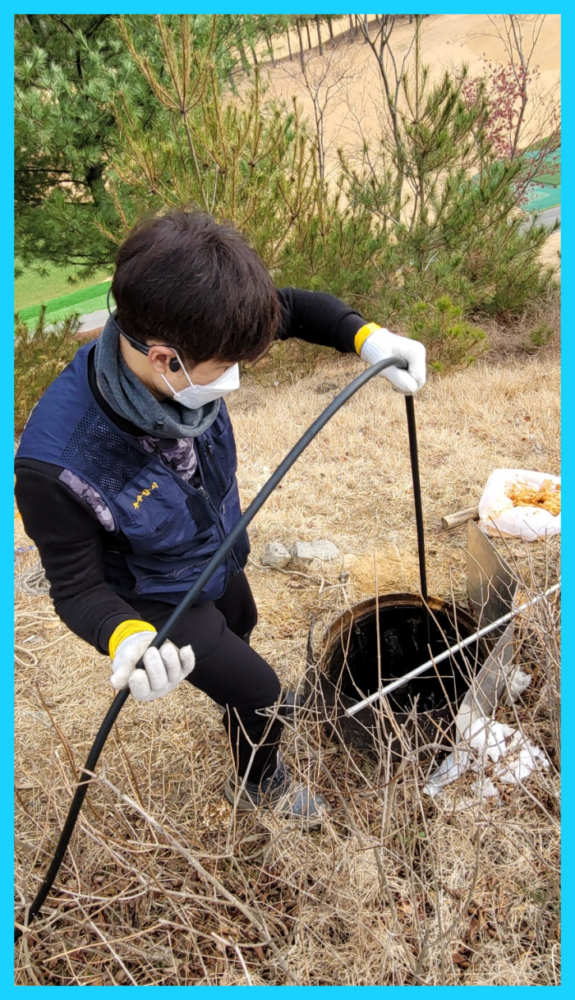
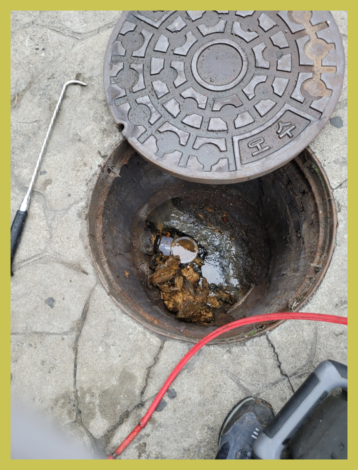
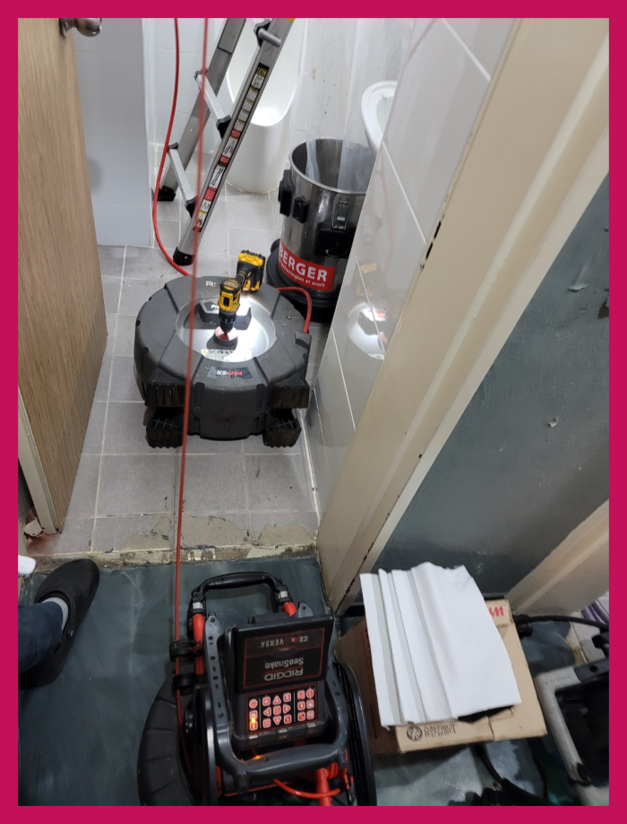

🏠 화성 향남하수구막힘 발안 배수관뚫음 하수구 배관수리 설비전문
화성 향남 싱크대막힘 전문 시공 후기

📋 작업 개요
- 위치: 화성 향남, 향남, 화성
- 서비스 유형: 싱크대막힘, 변기막힘, 하수구막힘, 배관막힘, 역류해결, 뚫는업체, 배관청소, 고압세척
- 작업 일시: 2023. 12. 4. 0:25
- 업체명: 하수구수사대 (010-5615-2118)
🔍 문제 상황
안녕하십니까^^
설비전문업체 "하수구수사대"를 찾아주셔서 고맙습니다.
보통 대부분 우리는 하수가 막히게 되면 곧바로 전문업체에 의뢰하기 보다는 급한 마음에 직접 해결을 하려고 시도하시는 분들이 많이 계시는것 같습니다.
저희는 다양한 상황에 따라 적합한 도구와 기술을 사용하여 하수도를 청소하고, 이물질을 제거하도록 노력합니다. 저희가 제공하는 서비스는 고객님의 생활 환경에 최적화되어 있으며, 신속하고 정확한 하수도작업으로 편안한 환경을 유지해드립니다.
화성 향남하수구막힘 발안 배수관뚫음 하수구 배관수리 설비전문
🔎 원인 분석
💡 전문가 진단: 화성 향남하수구막힘 발안 배수관뚫음 하수구 배관수리 설비전문
간단한 석션 작업만으로 제거할 수 있었던 이물질도 내버려 두게 된다면 나중에는 하수배관 스케일링을 받아야 하는 상황까지 이어질 수 있으며 역류가 일어난 상황에는 아래층에까지 피해를 주게 되어 피해 보상까지 해줘야 할 수 있습니다.
고압세척 외에도 비싼 값의 기계는 어정쩡한 곳은 준비가 불가능하여 스케일이 있는 하수작업을 해야 한다면 무조건 찾아보셔야 합니다. 그렇다고는 하지만 이 모든 것을 갖췄다고 성공하는 것은 아닙니다.
이럼으로 인해 배출구장비를 얼마나 갖추고 있는지 면밀히 알아보세요. 점성이 있는 기름때들은 소량일지라도 하수관 안에 남겨두게 되면 쌓이기 시작해서 소량이었던 것이 증식해 버리게 되어 틀어막게 되는 것인데요.
외관상으로 보았을 때에는 문제가 없어 보이지만 배출관내시경을 이용하여 배관의 내부를 살펴보면 심각한 상황인 곳들이 굉장히 많이 있습니다.이번에 다녀온 곳 역시 마찬가지였습니다.평소에는 괜찮았다가 갑자기 막힘이 발생하거나 역류한다면 누구라도 당황스러우실 겁니다.
퇴수구 시설 구조적인 특징을 살펴봤을 때 손상 여부가 있는 경우에는 사용을 주의해야만 합니다. 퇴수구배관 손상된 부분이 있는 경우 배관 상태를 내시경 장비로 꼼꼼하게 확인하면서 작업을 진행해야만 하죠.

🔧 작업 과정
저희업체가 말해드렸던 전문장비들은 하수도내부를 확인가능한 하수도카메라뿐만아니라 깊은데있는 침전물들을 고압의강도로 흡입하는 전문장비가있고 기계의헤드에 붙어있는 부속품과 빠르게도는게 강점으로 문제해결이가능한 첨단기계도 갖춰져있습니다
어쩌다가한번 막혀버린게아니여도 배수구 심각한악취가 퍼지게되는 문제가발생하게되는데요.이러한경우에는 수리하는곳마다 이유가서로틀리기에 정확하게살펴본후 고치고있답니다
배수관 다른설비회사에 연락하고 작업하셨다가 제대로안고쳐졌던 느낌을받으셨다면 의뢰해주시면 전력을다해서 처리해드리겠습니다.
세심하게확인하고 상황에따라 작업하고있어서 타업체와 비교할수없는 좋은서비스를 갖추고있습니다.하수관저희업체를 안고르셔도 앞서설명 드린것들은 절대로잊으면 안되기에 기억하셔야합니다.확신가능한것은 어떤데든 문제가생겼다면 금방처리 할수있다는점입니다.
현장에 방문해 보니 일단 남자화장실은 이용불가가 되어있는 상태였고, 들어가 보니 바닥에 물이 살짝 차 있는 상태였습니다.하수도막힘이 발생한거죠.
고객님들이 직접 육안으로 확인이 가능한 전후 모습으로 제대로 작업이 성공적으로 끝났는지 확인하실 수 있습니다.
모든 하수도막힘에는 그에 따른 원인이 있기 마련이고, 이미 고객님이 막힘을 느끼셨다면, 배관 안에서는 상당히 진행이 되었다고 볼 수 있습니다.
이렇게 돼 버린다면 아까운 돈만 배로 들어가게 되어 더욱 골치가 아파지실 텐데요배관막힘 이런 비슷한 사례를 사전에 막기 위해서는 확인하셔야 할 사항들이 한두 가지가 아닙니다. AS 서비스도 중요합니다.


✅ 작업 완료
이야기만 나눠도 고객님께서는 피해보실 것이 없습니다. 이 시간부로 걱정을 접어두세요. 거짓 없이 말씀드릴 테니 맡겨만 보시면 노력할 것을 약속드립니다. 여유 있는 시간대에 맞춰 출동하고 있으니 전문가의 손길을 받아보셨으면 합니다.
#하수구막힘 #하수구뚫음 #하수구역류 #씽크대막힘 #싱크대역류 #오수관막힘 #하수구청소 #욕실하수구막힘 #변기막힘 #하수구뚫는비용 #싱크대수리 #화장실막힘




⚠️ 주방 싱크대 배관 막힘 예방 수칙
- ✅ 기름기가 묻은 식기나 프라이팬은 설거지 전 키친타올로 반드시 기름때를 닦아내세요.
- ✅ 주기적으로 싱크대 개수대에 뜨거운 물을 가득 받아 한 번에 내려 배관 내부 기름을 씻어내세요.
- ✅ 배수구 거름망을 미세한 필터로 사용하시고 음식물 찌꺼기가 틈으로 새어 들지 않게 관리하세요.
- ✅ 베이킹소다와 식초를 뜨거운 물과 함께 일주일에 한 번씩 부어주면 배관 살균과 막힘 예방에 좋습니다.
💡 핵심 정리
- 확실한 장비 작업(내시경 점검 및 샤프트 스케일링)으로 원인을 뿌리 뽑습니다.
- 작업 후 1년 이내에 동일한 부위 재발 시 100% 무상 A/S 서비스를 보장합니다.
- 서울 · 경기 · 인천 전 지역에 24시간 언제든 긴급 출동할 수 있도록 항시 대기 중입니다.
❓ 자주 묻는 질문 (FAQ)
🚨 화성 향남 싱크대막힘 문제로 고민이신가요?
정확한 원인 진단과 확실한 시공으로 재발 없는 해결을 약속드립니다.
24시간 긴급 출동 | 서울 · 경기 · 인천 전지역 | 1년 내 재발 시 무상 A/S